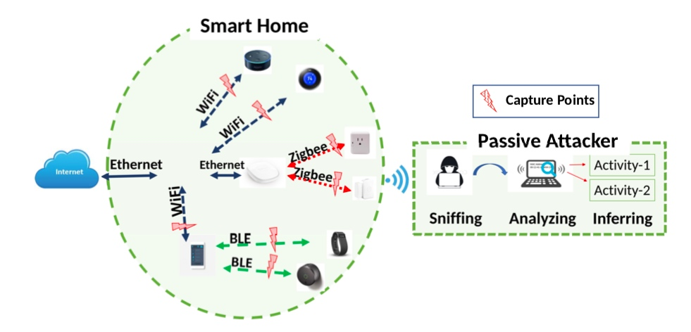
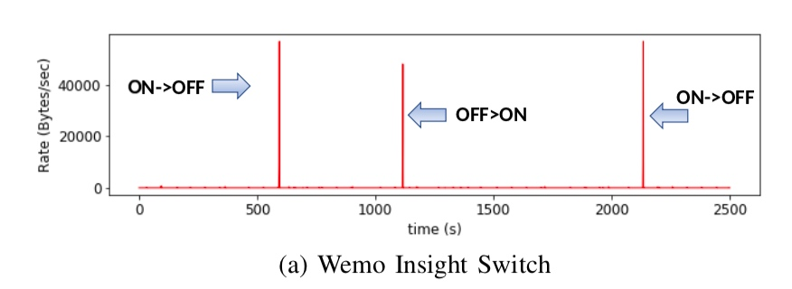
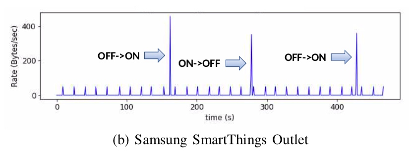
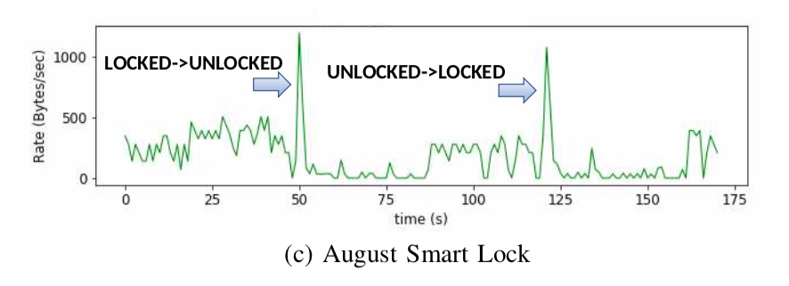
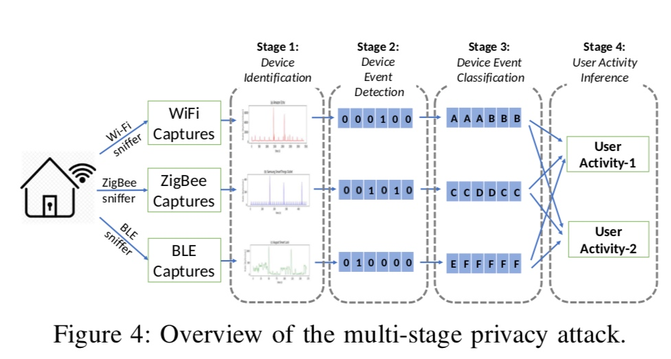
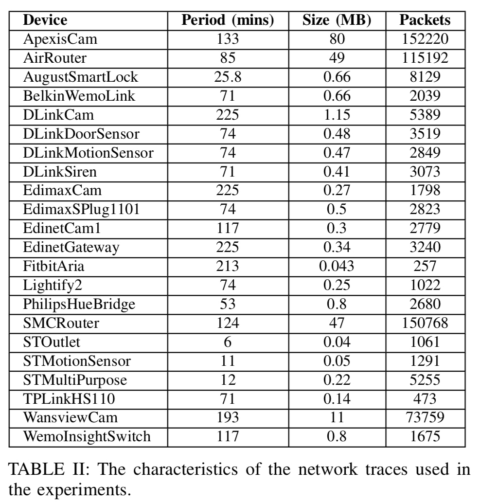
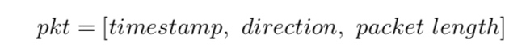
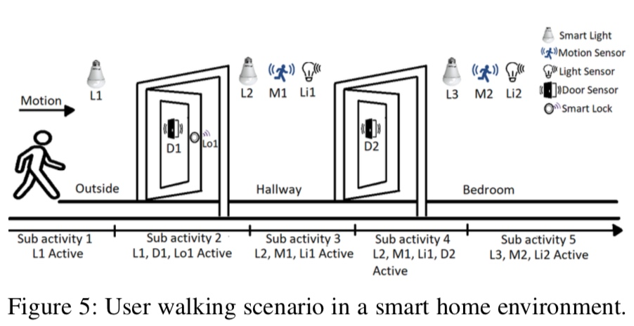

摘要
智能家居环境中的各种物联网设备，如灯泡，开关，扬声器，使用户可以轻松控制周围的物理世界，并促进他们的生活方式。然而，智能家居环境内或附近的攻击者可能潜在地利用这些设备使用的固有无线介质来泄露关于用户及其活动的敏感信息，从而侵犯用户隐私。考虑到这一点，在这项工作中，我们在智能环境中引入了针对用户隐私的新型多阶段隐私攻击。利用最先进的机器学习方法实现，通过仅被动地观察来自智能家居设备的无线流量，以级联方式检测和识别特定类型的物联网设备，其动作，状态和正在进行的用户活动。该攻击有效地用于加密和未加密的通信。我们利用一系列广泛使用的现成智能家居物联网设备，利用一系列不同的网络协议（如WiFi，ZigBee和BLE），通过真实测量来评估效果。我们的结果表明，被动嗅探网络流量的攻击者在识别目标智能家居设备及其用户的状态和行为时可以达到非常高的准确度（超过90％）。与早期直接的方法相比，我们的多阶段隐私攻击可以自动执行活动检测和识别，而无需分析协议的广泛背景知识或规范。为了防止这种隐私泄露，我们还提出了一种基于生成欺骗性网络流量的对策来隐藏设备的真实活动。我们还证明所提供的解决方案比现有解决方案提供更好的保护。
I. INTRODUCTION
以前，因特网主要用于访问和显示网页内容（即，网页浏览）。然而，随着智能家居中物联网设备的出现，用户现在能够使用适当的智能手机应用程序以及远程位置控制其家庭的电子系统（例如，智能灯泡，智能锁等）[29]。为了实现这一点，智能家居设备不断地与相关联的后端系统服务器或其他设备（例如，智能集线器）通信。另一方面，由于IoT设备通常是单用途设备，因此各个智能家居设备的能力相对有限，仅包括少数状态或动作。例如，智能锁只能采用锁定或解锁两种状态中的一种。鉴于服务器，智能集线器和智能家居设备之间的通信通常使用诸如WPA2的标准协议加密，在WiFi的情况下，交换的消息或命令的内容被隐藏。然而，加密仅隐藏有效载荷，网络流量的相关元数据（例如，分组长度，流量速率）仍然泄漏关于所交换的消息的一些信息。
识别加密的网络流量是一个经过充分研究的问题。然而，由于物联网设备固有特性带来的挑战，在智能家居领域应用统计技术[34]等传统识别方法并不简单。首先，与使用广泛部署的协议来执行诸如网页浏览之类的众所周知的特定活动的目标不同，在智能家居环境中，目标设备群体更加异构并且使用各种网络协议，例如WiFi，ZigBee，BLE等。 。用于支持更广泛的设备类型特定的，可能专有的应用程序协议。一方面，这自然会扩展潜在的攻击面，但也使得设计一般攻击或对策变得更加困难。其次，虽然早期的一些作品已经显示[32]，[8]，做出一些简单的推论（例如，在特定时间发生的事情）相对容易，结合来自不同智能家居设备的这些部分信息以获得更有意义的关于用户的行为或他/她的活动简介的图片并不容易。这是因为成功的攻击者必须在很长一段时间内从多个智能家居设备中汇总有关操作的信息，这只有在活动检测和识别可以在很大程度上自动化以保持所需工作可管理的情况下才可行。
在本文中，我们演示了如何使用基于智能家居物联网设备通信流量分析的机器学习方法，自动识别物联网设备及其用户在受害者智能家居中的行动和活动，具有极高的准确性即使只有加密数据可用。实际上，设备类型，用户的日常平凡活动（例如，离家，从厨房走到卧室）或设备的状态（例如，门锁，解锁）都可以容易地识别，即使交通被加密，冒充对用户隐私的威胁比以往任何时候都大。我们将这种针对用户隐私的新攻击称为多阶段隐私攻击，其通过仅被动地观察来自智能家居设备的无线流量以级联方式实现。在这种情况下，被动攻击者可以轻松实现多阶段隐私攻击，从任何配备智能设备的智能环境中提取有意义的数据，包括个人住宅，住宅，酒店房间，公司办公室或政府机构。在这里，与早期方法不同，所提出的攻击是设备类型和协议无关的，使其可以轻松应用于各种不同的物联网设备类型，而无需冗长地获取有关支持规范的设备类型或协议特定知识 - 活动识别任务。
我们使用最流行的物联网无线协议，利用22种不同的现成物联网设备评估新型多级隐私攻击的有效性。我们的实验结果表明，攻击者在识别设备的类型，动作，状态，活动时可以达到非常高的准确度（高于90％）。此外，为了对抗多阶段隐私攻击所带来的隐私威胁，我们还提出了一种新的有效对策解决方案，该解决方案基于生成欺骗流量，以隐藏目标物联网设备的真实状态，从而隐藏用户的真实活动。我们的解决方案不需要对目标物联网设备进行修改，因此比以前提出的物联网设备解决方案更容易部署，由于智能设备的巨大异构性和可用资源有限，因此很难实施基于客户端的对策在物联网设备上。此外，即使用户不在家，基于流量的虚假解决方案也会掩盖用户的缺席，从而进一步提高隐私性。
贡献
在讨论智能家居设备的特定特性（第三节）并根据案例研究（第四节）展示其相关的隐私泄漏源之后，我们提出了一种针对智能家居用户和设备的新型多阶段隐私攻击 ，包括识别设备类型，设备状态和正在进行的用户活动（第V节）。 该攻击包括几种新技术，用于减少基于时间的网络流量对机器学习（ML）问题的推断，并使用隐马尔可夫模型（HMM）推断用户活动。
我们使用流行的商业智能家居设备（n = 22）（第V节）的数据集来评估我们提出的新攻击。 我们表明，攻击者可以自动检测和识别设备操作的准确性高（> 90％），允许攻击者推断出有关智能家庭用户的潜在敏感信息。
II. ADVERSARY MODEL
作为物联网领域的独特挑战之一，尤其是智能家居，攻击面自然得到扩展，并由用户在家中部署的各种设备组成。 图1显示了攻击者在推断用户活动时可以利用的不同数据捕获点。 在这项工作中，我们认为物理位于目标用户的智能家居设备的无线范围内的被动对手类似于[20]，[21]，[22]。 攻击者可以窃听用户智能家居设备发送的各种无线物联网网络通信。 例如，如图1所示，攻击者可以嗅探通过WiFi，BLE和ZigBee协议传输的所有网络流量。 攻击者只需要被动地嗅探网络流量，而不需要中断。 因此，攻击者可以保持活动足够长的时间而不会被受害者检测到。

我们做出如下假设
攻击者可以访问与目标用户相同类型的智能家居设备，他/她可以通过收集这些设备的网络流量来分析设备，并使用收集的数据来训练其算法。
•目标1：攻击者旨在推断智能家居中使用的设备。 （第V-D节）
•目标2：攻击者旨在推断用户的日常工作。 （第V-E节）
•目标3：攻击者旨在推断特定智能家居设备的状态。 （第V-F节）
•目标4：攻击者旨在从多个设备的状态推断出特定的用户活动。 （第V-G节）
III. SMART HOME DEVICES
在本节中，我们将介绍与本文相关的智能家居设备的典型特征。 首先，我们根据智能设备的功能对其进行分类。 此基于功能的分类也可用于对设备操作进行分类。 其次，我们提供了有关这些设备使用的通信协议的必要背景信息。
A. Capabilities of Smart Devices
我们将研究中的智能设备分类为三个类别的功能。第一类是类似Hub的设备。它们是将其他设备相互连接并连接到Internet的中央通信集线器。它们主要不向用户提供自己的功能，因为它们的主要目的是充当使用除WiFi之外的其他协议将设备连接到智能家庭网络的网关。在某些情况下，如三星ST Hub，它们可作为集中平台，为不同的智能设备安装和运行智能家居应用。第二类设备是用户控制的设备。用户可以手动或通过智能手机或平板电脑等控制器设备控制这些设备。这种设备的示例包括智能灯，智能开关或智能锁。用户可以远程和本地控制这些设备。第三类是类似传感器的设备。这些设备是最原始的设备，只能通过内置传感器感应环境。这种类型的设备的一个例子是三星ST运动传感器，它可以检测在其附近移动的人。这些设备在发生事件时或定期向其关联服务发送通知消息。本文研究的所有装置如表I所示。
除了这些设备之外，典型的智能家居环境使用智能手机或平板电脑作为控制器设备来控制智能家居设备。 智能手机或平板电脑还可用作连接智能设备和智能家居集线器的界面，并在设备上安装不同的应用程序。 我们将智能手机或平板电脑视为用户活动推断中的控制器设备。
B. Communication Features
智能家居供应商和用户大多更喜欢通过有线通信进行无线通信，因为它更方便。 然而，与有线通信相比，来自智能家居设备的无线网络流量对于窃听攻击是开放的。 在这项工作中，我们针对三种无线协议：WiFi，ZigBee和蓝牙低功耗（BLE）。 其中，WiFi用于有线或插入式设备，而其他协议ZigBee和BLE用于电池供电设备的短距离通信任务，因为它们比WiFi消耗更少的功率。
1）支持WiFi的设备：支持WiFi的设备通过类似集线器的设备或直接连接到接入点连接到Internet。 在这两种情况下，攻击者都可以通过MAC地址跟踪和捕获通过特定设备的流量。 即使MAC地址可能有助于攻击者缩小设备类型，但它无法从MAC地址精确地确定设备类型。 它可能想要使用服务器的IP地址。 但是，攻击者只能看到由网络协议（SSL / TLS）和WiFi加密（WPA）加密的流量。 因此，它无法看到由WPA协议加密的IP或传输层标头。 这可以防止攻击者使用基于标头的功能进行设备识别。 但是，仍然无法从攻击者隐藏设备的流量速率。
2）支持ZigBee的设备：ZigBee设备有两个地址：MAC地址和网络地址（NwkAddr）。 MAC地址与启用WiFi的设备中使用的MAC完全相同，这对于世界上的每个设备都是唯一的，并且永远不会改变。 另一方面，NwkAddr在设备加入网络时创建并分配，并在离开并重新加入另一个网络时进行更改。 它类似于IP，但它没有加密，攻击者可以看到数据包的源和目标NwkAddr。 另外，网络协调器（即集线器）具有0x0000地址，并且每个网络具有唯一标识符，称为个人区域网络标识符（PAN ID）。 此信息可能还有助于攻击者。
3）支持BLE的设备：在BLE网络中，设备可以是主设备或从设备。 从站只能连接到一个主节点，而主站可以连接到多个从站节点。 在我们使用的所有智能家居设备中，当智能手机充当主设备时，目标智能设备充当了奴隶。 在建立连接之前，从设备广播广告包（ADV 在频道37,38和39上。一旦连接开始，他们就频道地图达成一致，他们会在其余的通信中跟随。 如果攻击者想要通过智能设备跟踪BLE流量，则需要捕获第一个数据包，以便它可以学习信道映射。 一旦攻击者捕获了访问地址，它就可以跟随其余的通信。
IV. SHOWING THE PRIVACY LEAKAGE
在本节中，我们将展示智能家居设备加密网络流量隐私泄露的可行性和可能性。 我们表明，可以嗅探设备网络流量的攻击者可以轻松地推断出一些简单的信息，而无需使用任何高级技术。 首先，我们解释了我们用于收集网络流量的方法和工具。 然后，我们展示了从智能家居设备捕获的每个WiFi，ZigBee和BLE协议的案例研究。
A.方法论
1）工具：对于所有协议，使用Wireshark和t-shark工具[5]完成数据包捕获，数据包字段提取分析（例如，时间戳，数据包长度）和分析。但是，我们使用不同的硬件和软件工具来捕获每个协议的网络流量。
WiFi：为了捕获WiFi的网络流量，我们使用了图2中的拓扑。我们使用hostapd [1]创建一个支持WPA的接入点（AP），并使用tcpdump记录通过特定设备的所有流量[3] ]和t-shark。对于硬件，我们在监控模式下使用Alfa AWUS036AC来创建欺诈AP。
ZigBee：使用Atmel RZUSBStick捕获ZigBee网络流量，我们使用killerbee [2]固件闪存，开源杀手级工具用于捕获流量。
BLE：我们使用Ubertooth One和开源Ubertooth [6]工具来捕获BLE网络流量。 Ubertooth One具有跟随模式，它将跟踪信道跳跃并跟踪连接。
B. Uniquely Identifying Each Device
下面，我们将解释如何为每个协议过滤设备：
WiFi：在WiFi中，WPA加密通常可以防止攻击者看到接入点和客户端之间交换的数据包内部。 只要攻击者不知道密钥，加密数据包的安全性就依赖于底层协议的安全性。 但是，源和目标的MAC地址未加密。 具有无线网络分析仪的攻击者将能够看到智能家居环境中每个设备的MAC地址，这允许攻击者记录特定智能家庭目标设备的网络流量。 尽管提出了一些避免这种类型的窃听攻击的方法，例如MAC过滤或随机化，但它们还不足以抵御针对特定设备的攻击者[37]。
ZigBee：在ZigBee中，每个节点都由唯一的标识符标识。 该标识符有两种变体：1）IEEE / MAC地址和2）网络地址（NwkAddr）。 虽然64位长IEEE / MAC地址用于唯一标识世界上的每个设备，但网络地址为16位，并在本地标识网络中的设备。 在安装设备期间（即，加入网络），协调器将唯一的网络地址随机分配给每个终端设备。 但是，安装后，设备将使用专用网络地址进行其余通信。 就攻击者而言，这允许攻击者指定其目标并过滤目标设备的数据包。 最后，智能集线器总是获得0x0000作为网络地址; 因此，攻击者可以很容易地识别它。
BLE：在BLE中，设备可以有两个角色：中央和外围。 虽然外围设备只能连接到一个中央设备，但中央设备可以同时连接到多个外围设备。 外围设备广播广告包以宣告其可由主设备连接的可用性。 为了过滤掉特定目标智能家居设备，攻击者可以使用广告地址来使用目标设备的广告包。 尽管它应该随着时间的推移而改变，正如其他研究[17]，在我们的实验中，我们观察到它并没有改变广告地址。 建立连接后，可以分配访问地址。 我们使用此地址来过滤目标智能家居设备的连接。 工具（即Ubertooth）通过将其设置为跟随模式自动执行此操作。
C. Case Studies
在本小节中，我们考虑每个协议的一个设备：Wemo Insight Switch Samsung ST Outlet（ZigBee）和August Smart Lock（BLE）。 我们分析每个设备的原始网络流量，看看是否真的可以从网络流量中提取信息，特别是从数据速率中提取信息。
1）Wemo Insight Switch（WiFi）：Wemo Insight Switch是一个支持Wifi的设备，用于监视和控制智能手机的其他设备（例如智能灯）。 它只有两个功能：ON和OFF。
图3a显示了从Wemo Insight Switch收集的样本流量的数据速率，其中我们说明了用户更改设备状态的许多操作。 从图中可以看出，当设备状态发生变化时，数据速率显示出显着的增加。 因此，数据速率清楚地揭示了设备状态的变化。 在第一个峰值中，设备的状态由用户改变，即设备开启，在第二个峰值，用户关闭设备等等。

2）Samsung ST Outlet（ZigBee）：Samsung SmartThings（ST）Outlet使用ZigBee协议与Sam-sung ST Hub进行通信。 它还可以充当转发器，并为智能设备重复Hub的广播包，这不在Hub的范围内。 这增加了Hub的范围。 除了重复Hub的广播包之外，它只有两种功能：ON和OFF。
三星ST插座的示例网络捕获的流量速率如图3b所示。 在给定的示例网络流量中，设备的活动已被用户更改三次，这明显对应于三个大峰值。 另一方面，小峰值对应于集线器的广播分组的重复，其周期为15秒。

3）August Smart Lock（BLE）：August Smart Lock通过BLE与用户的智能手机通信。 除了从智能手机上的应用程序锁定和解锁外，所有者（主用户）还可以通过Web服务器授予访客用户访问权限。 用户还可以启用自动解锁，其中当用户在范围内时锁定被解锁。 但是，只有锁没有远程控制功能。 对于远程访问，它需要其他附件（例如，WiFi桥接器）。 在这里，我们只考虑锁和智能手机之间的BLE通信。
图3c显示了August Smart Lock的示例数据包捕获图。 与之前的案例研究一样，攻击者可以清楚地识别设备操作之间的过渡。 捕获的第一部分中的流量速率的小幅增加是因为广告包。

V. MULTI-STAGE PRIVACY ATTACK
如图4所示，我们新颖的多阶段隐私攻击包括以级联方式连接的四个阶段。 虽然攻击的目标是在最后阶段推断用户活动，但每个阶段也会泄漏有关设备及其操作的部分信息，并且攻击者可以将其用于各种目的。 在下文中，我们首先概述攻击的高级概述，然后提供各个阶段和相关结果的详细信息。

A. Attack Stages
阶段1：在第一阶段，攻击者的目标是识别每个智能家居设备的类型。即使使用的协议对每个设备使用唯一标识符（例如，MAC地址，NwkAddr），攻击者也不知道特定地址对应的设备类型。通过嗅探各个协议的数据包，攻击者将获得使用该协议的所有设备的网络流量配置文件。然后，根据各个设备的流量配置文件，识别单个设备的设备类型将成为多类别分类任务。
阶段2：在发现各个设备的类型后，攻击者的目标是推断各个设备的状态。如图3所示，状态变化通常导致与设备相关的网络流量的显着增加，导致数据速率的增加和分组的到达间隔时间的减少。因此，在大多数情况下，攻击者可以通过观察这些指标的变化来检测设备的状态变化。在此阶段结束时，如图4所示，攻击者将网络数据包转换为1和0，其中1表示转换发生的位置。
阶段3：在检测到设备状态之间的转换之后，攻击者将设备的网络轨迹分成对应于不同设备状态的段（例如，ON，OFF）。 然后将识别这些状态简化为多类分类问题，其中类表示可能的设备状态。
阶段4：在此阶段，通过使用阶段3中的状态分类结果，攻击者知道所有设备的预测状态。 例如，在特定时刻，攻击者可能知道智能锁处于锁定状态，在放置在厨房中的运动传感器中没有检测到运动，等等。 使用设备的状态信息，攻击者可以猜测用户正在睡觉。 智能家居中的任何用户活动都可以通过观察设备和传感器的预测状态并使用隐马尔可夫模型来预测相应的用户活动来预测。
在接下来的部分中，我们将评估我们的多阶段隐私攻击对从智能家庭中使用的22种不同的现成物联网设备收集的网络流量数据的效率。
B. Dataset and Evaluation Metrics
为了评估上述阶段的攻击，我们从22个不同的智能家居设备中收集了网络数据。我们在实验室网络中安装了所有设备，并模拟了触发设备状态变化的用户输入。我们捕获了设备的所有网络流量并离线执行了分析。表II给出了捕获的持续时间和总大小以及数据包的数量。

C. Calculating Features from Network traffic
在本小节中，我们将解释如何将流量用于分类任务。 特别是，我们利用以下事实：虽然协议中的加密层保护数据包的有效负载，但它无法隐藏网络流量模式显示的其他信息，例如，数据包长度（SPL）和方向的序列（传入/即将离任的）。 我们将每个网络流量流视为在会话期间在两个对等体之间交换的时间有序的分组序列。 在处理网络流量进行分类之前，我们将流量中的数据包转换为数据包长度和时间序列（SPLT），格式如下：

如果是传入（传出）数据包，则方向为1（0）。 对捕获的跟踪中的每个数据包执行此转换，其中每个结果都写入新行。 最后，我们获得了一个有三列的矩阵。 然后，在每次攻击的特征提取中，我们计算了该矩阵的特征。
D. Stage-1: Device Identification
在文献中已经提出了几种用于IoT设备的不同识别方法。大量工作表明，对于支持WiFi的[26]，[16]，[10]，[25]，[28]和支持BLE的[17]设备，可以高精度地识别物联网设备。因此，在本文中，我们只关注支持ZigBee的智能家居设备。
在我们的数据集中，每个设备都可以由<brand，device - type>对唯一标识。我们没有将设备的不同型号视为不同的设备。另一方面，ZigBee中的集线器始终使用网络地址0x0000，因此攻击者可以轻松识别它。因此，我们没有将集线器包含在ZigBee设备的识别中。
收集ZigBee网络流量后，第二步涉及提取功能以识别设备。在此步骤中，我们使用的功能包括平均数据包长度，平均到达间隔时间和数据包长度的标准偏差。我们将设备的每个单独的网络流量轨迹分成相等的时间间隔（例如，5秒，10秒）。然后，我们为每个间隔计算了这些特征。
对于分类，我们使用kNN分类算法。分类器可以正确识别ZigBee设备的总体准确度为93％的设备。这表明，对于WiFi和BLE，也可以高精度地识别使用ZigBee的设备。
E.阶段2：设备状态检测
当设备和用户之间的交互发生时，传输大量数据，这导致流量速率的显着增加。
1）特征提取：我们的目标是将一系列数据包转换为监督学习数据集。为了实现这一点，我们将数据包序列划分为大小为W的窗口。对于给定的时间间隔长度W，我们提取了一个由三个变量组成的特征向量：平均数据包长度，平均到达间隔时间和数据包大小的中位数绝对偏差。根据时间戳标签告知活动是否正在进行，我们将给定的向量标记为1表示正在进行的活动，0表示没有活动。窗口大小对我们模型的性能有重要影响。最佳性能的窗口大小取决于根据活动持续时间调整大小。通常，选择较小的窗口大小会将性能提高到某种程度，但任何进一步的降低都会导致性能下降。根据我们的观察，当窗口大小约为活动持续时间的四分之一时，观察到更好的性能。
2）结果：在从包序列中获得具有标签的特征向量之后，可以对数据集应用任何监督学习算法。 我们已经评估了两种监督学习算法，即随机森林分类器（RF）和k近邻分类器（kNN）。 如表III所示，RF和kNN具有相似的性能，RF平均值为88％，kNN具有91％的正确检测活动平均值。 表III中每个设备的F1得分略有不同。 DlinkMotionSensor使用RF的最差F1得分为74％，使用kNN的得分为69％，Aria Fitbit和AugustSmartLock的最佳F1得分为100％。
F. Stage-3: Device State Classification
G. Stage-4: User Activity Inference
现代智能家居环境包括多个相互连接并共享信息的传感器和设备。 这些设备和传感器被配置为独立的实体，但是相互依赖地工作以提供自治系统。 智能家居中的任何用户活动都可以通过观察设备和传感器的状态来预测[31]。

1）建模用户活动：在图5中，我们演示了用户的简单步行场景。在这里，用户通过走廊从外面进入卧室。该场景由五个不同的设备组成，其内部和外部的灯由运动传感器（M）和光传感器（L）控制。这个简单的活动可以说明为顺序模式：子活动1-从外面向门移动（L1有效），子活动2-用户打开前门（L1，D1，Lo1有效），子活动3-用户进入走廊（L2，M1，Li1有效），子活动4-用户进入房间（Li2，L2，M2，D1，Lo1有效），子活动5-用户在家中（ L2，M2，Li2是活跃的）。要完成活动，用户必须遵循相同的子活动顺序并完成每个步骤。如前所述，特定时间的设备状态（活动/非活动）可以从从设备捕获的网络流量中确定。这些设备状态可用于推断智能家居设置中正在进行的活动。
2）特征提取：为了推断用户活动，必须从网络流量数据中提取不同的设备特征。网络流量数据包含若干特征，包括定时信息，传感器信息，设备状态，位置等。
VI. MITIGATING THE PRIVACY LEAKS
VII. DISCUSSION
VIII. RELATED WORK
IX. CONCLUSION
在本文中，我们探讨了如何使用来自智能家居环境的加密网络流量来推断有关智能设备的敏感信息。具体来说，我们引入了一种新颖的多阶段隐私攻击，攻击者可以通过被动监控智能家居设备的无线流量，利用该攻击自动检测和识别特定类型的设备，其动作，状态和相关用户活动。我们对现成的智能家居设备和真实用户的广泛评估表明，攻击者可以在所有攻击类型中实现非常高的准确度（高于％90）。与早期直接的活动识别方法相反，新颖的多阶段隐私攻击可以自动执行检测和识别，是设备类型和协议不可知的，并且不需要广泛的背景知识或分析协议的规范。最后，我们提出了一种新的有效的缓解机制来隐藏用户的真实活动。多阶段隐私攻击的有效性引起了对配备有智能设备的任何智能环境的严重隐私问题，包括个人住宅，住宅，酒店房间，公司办公室或政府机构。因此，安全社区应该进一步研究这种新颖的攻击面并开发解决方案以确保智能家庭用户的隐私。